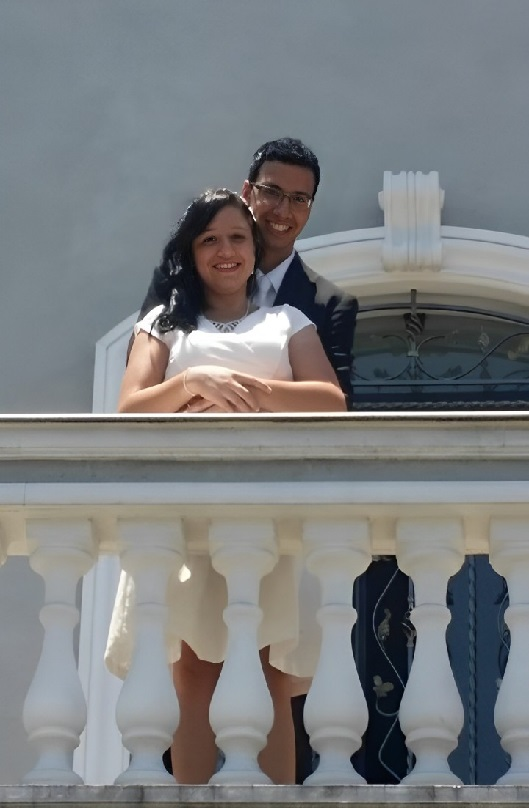

No dia 19/12/2015 nos casamos, e que dia maluco, incrivel, corrido e etc... digno de uma história
O meu tio achava que o casamento era no cartorio de Embu Guaçu, então estava tranquilo, quando soube que era no cartório do Jd. São Luis, começou a correr como um maniaco, mas graças a ele conseguimos chegar a tempo
Voltamos pro Embu, passamos pra deixar sua mãe e seus irmãos e fomos pra nossa humilde moradia
Meu irmão quase estragou a surpresa, por que ele apareceu do nada, mas voce estava desatenta então não entendeu por que ele estava lá.
Com uma conversa fraca e um pretexto absurdo, consegui te convencer a irmos na capela para tirar umas fotos pra um album, ainda sem entender voce se arrumou e fomos.
Chegamos lá e enfim voce soube (por que era a unica que ainda nao sabia) que teriamos uma cerimonia de casamento, com flores, enfeites, vestido e uma festa simples
Foi uma cerimonia linda, o bispo falou sobre como deveriamos tratar o casamento, como deveriamos tratar um ao outro...

Voltar para a página principal